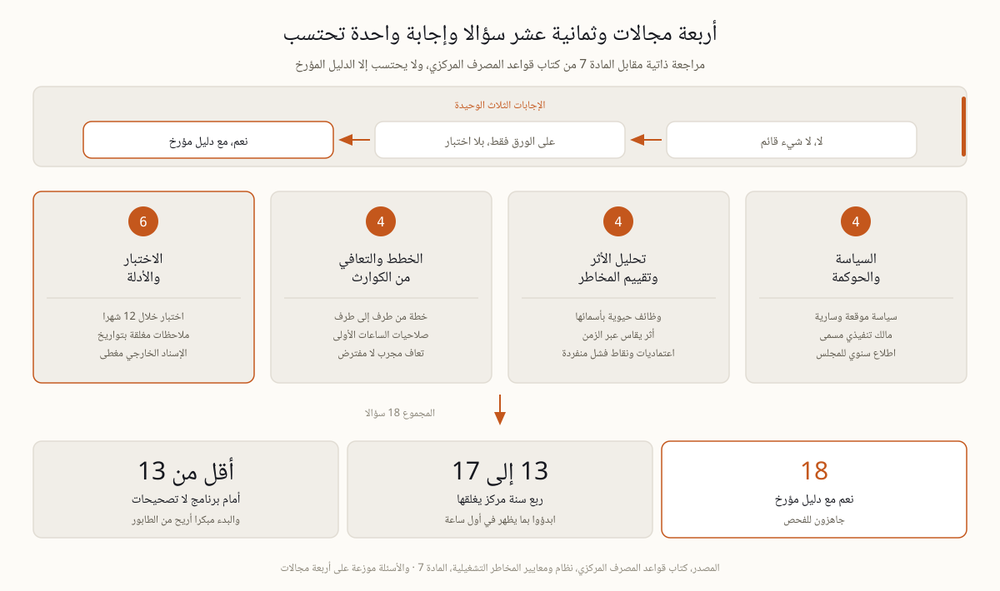

ثمانية عشر سؤالا، هل تصمد أدلتكم أمام فاحص المصرف المركزي؟
مراجعة ذاتية عملية مقابل المادة 7 من كتاب قواعد المصرف المركزي. ثمانية عشر سؤالا، ولكل سؤال ثلاث إجابات فقط، ولا يحتسب منها إلا الأولى، نعم مع دليل مؤرخ.
كيف تجرون هذه المراجعة حتى تفيدكم
المراجعة التي يملؤها شخص واحد في مكتبه لا تكشف شيئا، لأنها تقيس ما يعرفه هو لا ما سيجده الفاحص. اجمعوا في غرفة واحدة مالك ملف الاستمرارية ومسؤول التقنية ومن يدير المدفوعات ومن وقع على السياسة، واطرحوا الأسئلة بصوت مسموع. ولكل سؤال ثلاث إجابات لا رابع لها، نعم مع دليل مؤرخ، أو على الورق فقط، أو لا. والفرق بين الأولى والثانية ليس فرقا لغويا، لأن الفاحص لا يسأل هل لديكم سياسة، بل يقول أروني إياها، ثم يقارن التاريخ المكتوب عليها بتاريخ آخر تغيير جوهري في أعمالكم. أما ما الذي يطلبه التنظيم أصلا وأين هو مكتوب بالضبط فتجدونه في صفحتنا عن متطلبات المصرف المركزي للمرونة التشغيلية، وهذه الصفحة لا تعيد شرحه، بل تفحص أين تقفون منه اليوم.
السياسة والحوكمة، أربعة أسئلة
يبدأ الفحص من هنا لأنه أسرع مكان تنكشف فيه الفجوة. الوثيقة التي لا يعرف أصحاب الأدوار فيها أنهم أصحابها تسقط في أول مقابلة.
هل توجد سياسة استمرارية موثقة تذكر الأهداف والنهج والأدوار التي تملك صلاحية التصرف، موقعة وسارية لا مسودة عمرها ثلاث سنوات؟
هل يملك مسؤول تنفيذي مسمى ملف استمرارية الأعمال، وهل تقع المساءلة عليه باسمه لا على لجنة، مع اطلاع المجلس مرة واحدة على الأقل في السنة؟
هل يعرف أصحاب الأدوار أنهم أصحابها، وهل يجيبون في مقابلة مباشرة بما هو مكتوب في السياسة لا بما يتذكرونه؟
هل النطاق متناسب مع حجمكم وتعقيدكم وطبيعة مخاطركم، ومكتوب معه تعليل يشرح لماذا استبعدتم ما استبعدتم؟
تحليل الأثر وتقييم المخاطر، أربعة أسئلة
هنا تنكشف الفجوة الأشهر في المنطقة، وهي وثيقة صحيحة يوم كتبت وقديمة اليوم. التاريخ وحده يكفي الفاحص للحكم.
هل حددتم كل الوظائف الحيوية بأسمائها، وقستم أثر تعطلها عبر الزمن بدل وصف نوعي عام؟ والمنهجية في صفحتنا عن تحليل أثر الأعمال.
هل يحدث تحليل الأثر باستمرار، وهل تاريخه لاحق لآخر تغيير جوهري عندكم من إطلاق قناة رقمية أو تبديل مزود أو استحواذ؟
هل لكل وظيفة حيوية أهداف تعاف معلنة، وهل تبلغها ترتيباتكم الحالية فعلا لا على الورق؟
هل رسمتم الاعتماديات من أنظمة وموردين ومبان وأشخاص مفتاحيين، وهل سميتم نقاط الفشل المنفردة صراحة بدل تركها مفهومة ضمنا؟
الخطط والتعافي من الكوارث، أربعة أسئلة
الخطة تقاس بما ينفذه منها مناوب ليل لا يعرفكم، لا بعدد صفحاتها ولا بجمال مخططاتها.
هل تغطي خطة الاستمرارية الموثقة كل وظيفة حيوية من طرفها إلى طرفها، وهل تحقق أهداف السياسة نفسها؟
هل ترتيبات الساعات الأولى صريحة، من يعلن الحادث ومن يقرر ومن يتواصل، بصلاحية مكتوبة لا بعرف متوارث؟ وتفصيلها في صفحتنا عن الستين دقيقة الأولى.
هل توجد ترتيبات تعاف تقني للأنظمة الحيوية بأهداف متسقة مع تحليل الأثر، وهل جرب أحد التحويل إليها فعلا؟
هل حددتم الحلول اليدوية المؤقتة لما بين الاضطراب والتعافي، وهل اختبرتموها بدل افتراض أن الفريق سيرتجل بنجاح؟
الاختبار والأدلة، ستة أسئلة
هذا المجال يحمل ثلث الأسئلة لأنه يحمل معظم الملاحظات. كل ما سبق يبقى ادعاء حتى يثبته اختبار مكتوب.
هل اختبرتم الخطة خلال الاثني عشر شهرا الأخيرة، أو أبكر من ذلك بعد تغيير جوهري في العمليات؟
هل أنتج الاختبار توقيتات وملاحظات وإجراءات، وهل أغلقت تلك الإجراءات بسجلات وتواريخ ومسؤولين بأسمائهم؟
هل يستطيع الموظفون تنفيذ خطط الطوارئ فعلا، وهل تحقق الاختبار من ذلك بدل أن تصرح به السياسة؟
هل لديكم حزمة أدلة يقرؤها الفاحص في ساعة واحدة، وفيها السياسة وتحليل الأثر والخطة وتقارير الاختبار ومحاضر المجلس؟
هل يتلقى المجلس تقارير مرونة بمؤشرات دورية لا شريحة عرض واحدة كل سنة؟ وما يطلبه المجلس فعلا في صفحتنا عن دور مجلس الإدارة.
هل الخدمات الحيوية المسندة خارجيا مغطاة، باستمرارية مزود مقيمة والتزامات تعاف تعاقدية وخيار خروج وحل مؤقت خاص بكم؟

المجالات الأربعة وتوزيع الأسئلة عليها، ونطاقات قراءة النتيجة.
كيف تقرؤون النتيجة
اجمعوا الإجابات الأولى وحدها، وتجاهلوا ما عداها. ثمانية عشر نعم مع دليل مؤرخ تعني أنكم جاهزون للفحص، ويبقى عليكم إبقاء الملف حيا. ومن 13 إلى 17 تعني أن ربع سنة واحدا مركزا يغلق ما تبقى، بشرط أن تبدؤوا بالفجوات التي تظهر في أول ساعة من الزيارة. وأقل من 13 تعني أنكم أمام برنامج لا أمام تصحيحات متفرقة، والبدء مبكرا يظل أريح بكثير من طابور الأسابيع الأخيرة قبل سبتمبر 2026. وأيا كانت نتيجتكم فالرقم نفسه ليس هو المنتج، بل قائمة الفجوات مرتبة بكلفة التوقف وباحتمال أن تتحول كل فجوة إلى ملاحظة رقابية مكتوبة، وهذا الترتيب وحده هو ما يحول المراجعة إلى خطة عمل. أما توزيع العمل على ما تبقى من وقت حتى 16 سبتمبر 2026 ففي صفحتنا عن العد التنازلي.
ثلاث إجابات يخدع بها الفريق نفسه
"هذه ليست قائمة رسمية، فلا داعي لأخذها بجدية." صحيح أنها ليست صادرة عن المصرف المركزي، فهي قائمة ممارسين مبنية على متطلبات المادة 7 وعلى ممارسة الرقابة في المنطقة، ونص كتاب القواعد على rulebook.centralbank.ae هو المرجع. لكن الفاحص لا يأتي بقائمتنا ولا بقائمتكم، بل بالأسئلة نفسها.
"لدينا كل شيء، الأمر يحتاج إلى تجميع فقط." التجميع في الأسبوع الأخير يظهر في الملف. الدليل المؤرخ لا يستكمل بأثر رجعي، وتقرير اختبار كتب قبل الزيارة بأيام يقرأ تماما كما هو. ووظيفة التدقيق الداخلي أن تكشف هذا النمط قبل الفاحص، إن سألتموها.
"نظامنا الأساسي مسند إلى مزود عالمي، فالاستمرارية مسؤوليته." الإسناد ينقل التشغيل لا المساءلة. تحتاجون تقييم استمرارية المزود مقابل اعتماديتكم أنتم، والتزامات تعاف مكتوبة في العقد، وحلا مؤقتا خاصا بكم لفجوة لن يغطيها أحد غيركم.
المصادر، كتاب قواعد المصرف المركزي، نظام ومعايير المخاطر التشغيلية، المادة 7، rulebook.centralbank.ae · ممارسة الرقابة المنشورة في دول الخليج.
حوكمة المرونة التي يفحصها المصرف المركزي هي مادة برنامج ERGP، أول شهادة في حوكمة المرونة متاحة بالكامل باللغة العربية وبالإنجليزية أيضا. ست وحدات وستة مخرجات عملية ومشروع ختامي يناقش أمام ممتحن وشهادة قابلة للتحقق.